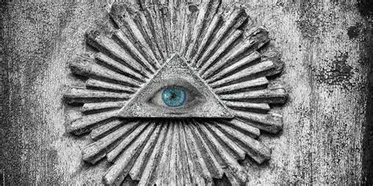

Alles begann mit einer einfachen Frage: Was, wenn die Dinge nicht so sind, wie sie uns erzählt werden? Was zunächst als lose Sammlung von Gedanken, Diskussionen und geteilten Artikeln begann, entwickelte sich schnell zu mehr. In kleinen Foren, privaten Gesprächen und nächtelangen Recherchen entstand eine wachsende Gemeinschaft von Menschen, die nicht bereit waren, alles ungeprüft zu akzeptieren. Mit der Zeit wurde klar: Es braucht einen eigenen Raum. Einen Ort, an dem Informationen gesammelt, Perspektiven ausgetauscht und Fragen offen gestellt werden können – ohne vorschnelle Bewertungen. So wurde diese Plattform ins Leben gerufen. Seitdem hat sich vieles verändert. Die Themen sind vielfältiger geworden, die Community ist gewachsen, und auch unsere Herangehensweise hat sich weiterentwickelt. Was jedoch geblieben ist, ist der ursprüngliche Antrieb: Neugier, Skepsis und der Wunsch, Zusammenhänge besser zu verstehen. Wir haben gelernt, dass der Weg zur Erkenntnis selten geradlinig ist. Es gibt Irrtümer, Sackgassen und neue Fragen. Doch genau darin liegt der Kern unserer Geschichte. Sie ist nicht abgeschlossen. Und vielleicht wirst auch du ein Teil davon.
